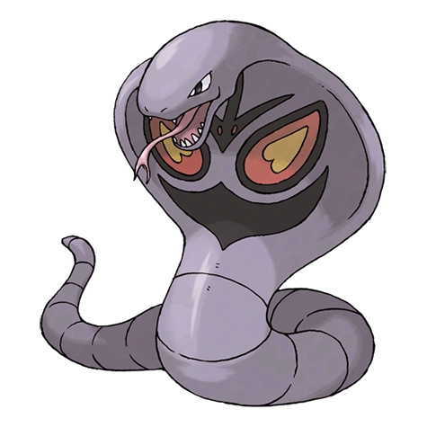

Эрбок

Эрбок — Покемон 1 поколения под номером 24 в Покедекс. Обитает он в регионе Канто и относится к Ядовитому типу. Это последняя стадия эволюции Покемона Эканса. Эрбок обладает огромной силой для сжатия предметов своим телом. Он может даже сплющивать стальные бочки. Если Эрбок обвивает врага своими кольцами, то вырваться из его сокрушительных объятий невозможно.
Тип и слабости:
Ядовитый
Эволюция
# 024 Эрбок
Финальная стадия